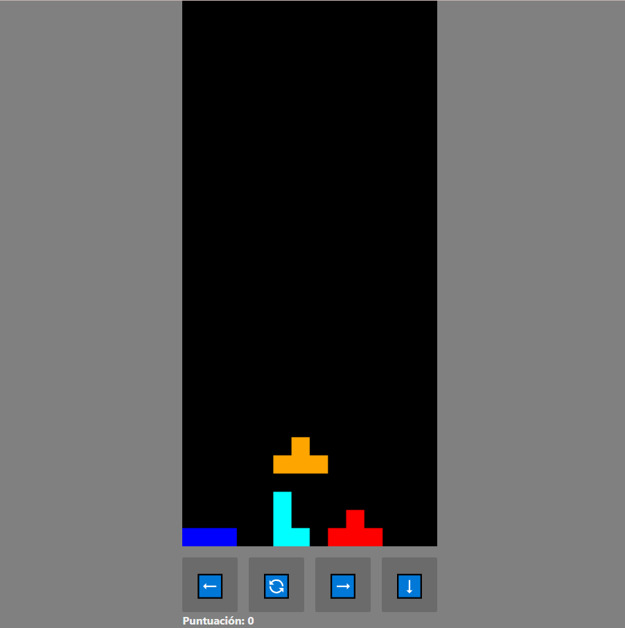

TETRIS
Este proyecto es una recreación del clásico Tetris con HTML, CSS y JavaScript. Incluye mecánicas de juego como rotación de piezas, detección de colisiones y sistema de puntajes.
Este proyecto es una recreación del clásico Tetris con HTML, CSS y JavaScript. Incluye mecánicas de juego como rotación de piezas, detección de colisiones y sistema de puntajes.